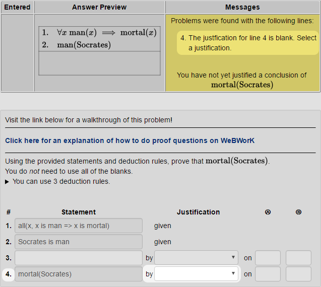
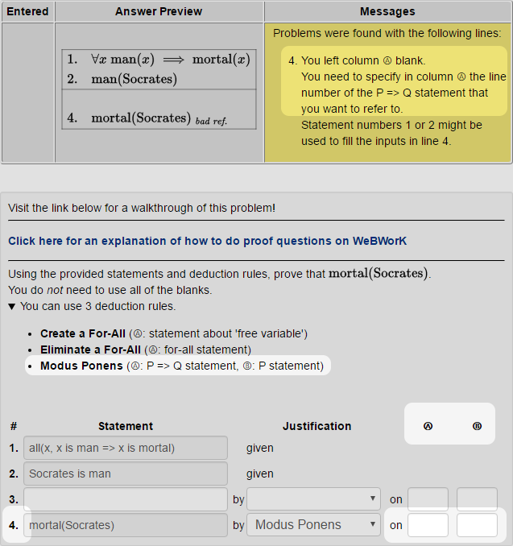
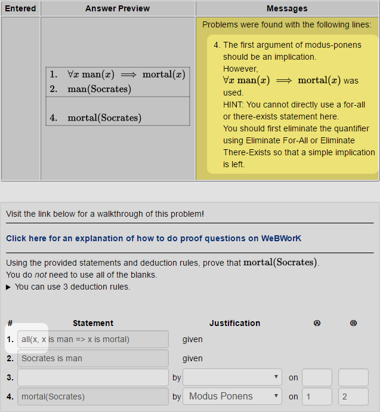

A proof question on WeBWorK asks you to formally show that some statement is true.
A proof-question gives you several pieces of information:
For a proof question, you must write a series of statements which logically follow from the given statements that end with the specified conclusion.
Each line in the proof is made up of several parts:
WeBWorK verifies that each line in your proof correctly follows from the lines before it. When you click "Preview My Answers" or "Check Answers", WeBWorK will point out any problems in your proof.
The checker is very pedantic. It requires
you to write proofs that skip no steps.
Something as simple as x+y being replaced with
y+x needs a line in your proof.
There are multiple ways to type some statements. You can use whichever one you prefer, though the ones with more parentheses might be helpful if WeBWorK is having trouble understanding you.
It is probably easiest to first sketch the solution out on paper. Once you have the basic outline planned on paper, then try to enter the proof one line at a time.
You can click "Preview My Answers" at any time to get feedback on the proof you've written so far. Getting your proof accepted one line at a time will make fixing typos and logic errors less frustrating.
Let's use the proof checker to check the famous syllogism,
All men are mortal.
Socrates is a man.
Therefore, Socrates is mortal.
First, this has to be written in a more formal notation.
Predicates like x is mortal
are typically written as mortal(x) in math.
WeBWorK allows you to write predicates in any of the three ways:
x is a mortal
x is mortal
mortal(x)
All three forms are equivalent. You can use whichever you prefer.
To express a concept like "a man is a mortal", we have to
state it as an implication (if ... then ...).
You can use
if ... then ... or => to create
implications.
For example, "a man is a mortal" might be written as either
if x is a man then x is a mortal
x is a man => x is a mortal
General statements like those involving the words all or any must be stated explicitly using quantifiers.
Quantifiers can be written like predicates; they can also be
written without ().
For example, "everyone loves icecream" might be written as any of the following:
forall(x, loves(x, icecream))
all(x, loves(x, icecream))
forall x loves(x, icecream)
all x loves(x, icecream)
Here is how the problem would be presented to you in WeBWorK. (This is the first exercise assigned to you; you can follow along!)
You can recognize that we want to use
x is a man => x is a mortal
together with the fact that Socrates is a man.
The deduction rule that allows us to use A => B and
A
together to conclude B is called
modus ponens.
First, try entering Socrates is mortal.
Click "Preview My Answers" to see what WeBWorK has to say about that.

WeBWorK will tell you that you need to include a justification for the line you just added. Pick modus ponens from the dropdown.

WeBWorK asks you to tell it what previous lines this new line is referring to. In this case, we want column Ⓐ to refer to line 1 and column Ⓑ to refer to line 2. You can look at either the error message or the list of deduction rules to see what is expected for each column.

WeBWorK rejects this attempt because line 1 is actually a quantified implication, but modus ponens requires a bare implication.
Sorry, but the computer is pedantic. We need to get
a statement that looks exactly like
man(Socrates) => mortal(Socrates) in order to use it with
man(Socrates).
We can conclude such a statement from line 1 using the Eliminate a For-All deduction rule.
Finally, modus-ponens can be used to reach the conclusion.
You can submit your correct proof!
Being this careful can help you avoid writing incorrect proofs. Taking smaller steps can help you avoid logical fallacies and other pitfalls that WeBWorK will reject. However, writing proofs in this way is not easy.